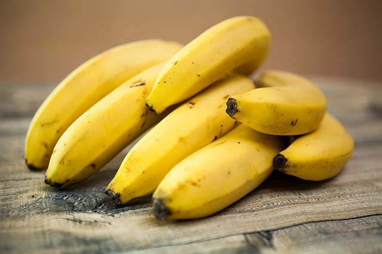

Home
Tips And Tricks
Planting
Weeding
Transplanting
Harvesting
Spraying
Glossary
Problem-Solving
Contact us
Gallery
🔍

Gardenig Terms
Here are some useful gardening terms:
Acid Soil
Soil that is lower than 7.0 pH. Acidity is measured by the amount ofcalcium in the soil. The opposite of acidic soil is alkaline soil.
Deciduous
A tree or plant that loses its leaves at the end of the growing season,such as a maple tree.
Fungus
A primitive, non-vascular, non-photosynthetic form of plant life.Examples include mildews, molds, and mushrooms.
Nematode
A microscopic roundworm that lives in the soil. There are both harmfuland beneficial nematodes. Harmful ones take their toll on the roots of theplant.
Come Visit Our Store
Garden Technologies
Mbolu Malu rd, Machakos
Contact us
0768599825